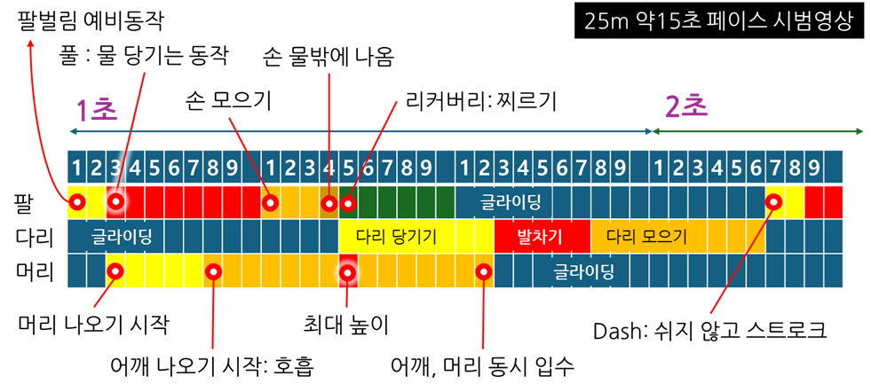
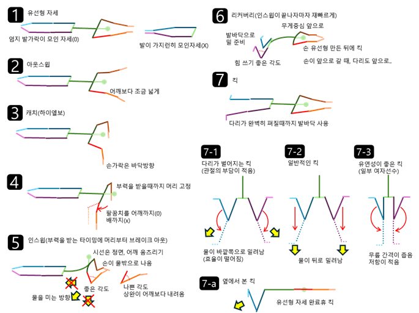

스트로크
- 익스텐션Extension: 양 팔을 쭉 뻗은 상태
- 아웃스윕Outsweep: 양 팔을 어깨보다 넓게 벌리는 자세
- 캐치Catch: 양 팔을 수면에 수평으로 위치시키는 자세
- 캐치에서 이미 몸이 떠버리면, 인스윕 동작에서 몸이 가라앉기 시작하므로 주의
- 머리를 미리 들어 저항을 받지 않도록 주의
- 인스윕Insweep: 양 팔을 모으는 자세
- 팔꿈치가 배까지 내려가서는 안됨
어깨부터 상완이 수면에 수직, 양 손은 수면위로 올라올 수 있음 - 인스윕에서 쉽게 뜨기 위해서 부력이 작용하는 시점에서 수행
- 머리를 들어, 시선은 정면. 브레이크아웃이 머리, 어깨 순으로 수행
- 인스윕에 머무는 시간이 최소화 되어야 함
- 인스윕으로 물을 밀어내는 방향은 아래+뒤 방향
- 인스윕으로 뒤로 밀어낸 물이 다리의 영향을 받지 않도록 인스윕이 끝날때까지 다리를 당겨오지 않음
- 팔꿈치가 배까지 내려가서는 안됨
-
리커버리Recovery: 양 팔을 앞으로 미는 자세
- 어깨의 넓이를 좁혀 저항을 최소화
- 리커버리에 팔이 전진하는 타이밍에 발을 당겨옴
- 리커버리가 완전히 수행되어, 저항이 가장 작고 전진 방향이 확보 된 이후에 발차기
킥
-
킥의 비중은 약 60~80%로, 다른 영법에 비해서 킥의 기여도가 가장 높음
평영 킥의 비중 연구 연구 킥 기여도 특징 The Biomechanics of Sports Techniques (Hay, 1988) 약 70% 고전적 운동역학 분석 A Comparison of the Movements of the Feet in Breaststroke Swimming (Colman et al., 1998) 60~80% 킥 유형별 차이 분석 A Comparison of the Start and Underwater Phase of Elite Butterfly and Breaststroke Swimmers (Arellano et al., 1994) 70% 이상 (수중) 스타트/턴 중심 분석 Swimming Speed of the Breaststroke Kick (Strzała et al., 2012) - 점프력과 킥의 관계 - 단계
평영 킥 단계별 용어 단계 용어 설명 1 Recovery(리커버리) 무릎을 당겨오는 단계 2 Setup / Preparation(셋업) 발바닥이 물을 밀 준비자세 3 Propulsion / Drive Phase(킥) 발바닥으로 물을 밀어내는 단계 4 Snap / Whip Phase(스냅) 발을 모으면서 추진 마무리 5 Glide Phase(글라이드) 발을 모은 상태에서 물의 저항을 최소화하여 진행중인 자세 -
킥의 자세
- 팔이 정면을 향해 뻗을 때, 다리를 당겨옵니다.
- 리커버리: 당겨온 다리의 모양은 W모양이며 개구리의 준비자세와 흡사합니다.
- 킥: 발바닥 전체가 물을 밀어낼 수 있어야 합니다.
- 킥: 발 날로 물을 가르는 실수가 빈번하게 일어납니다.
- 킥: 무릎을 많이 당겨, 물을 밀어내는 거리가 긴 것이 유리합니다.
- 스냅: 최종적으로 엄지발가락이 서로 만나는 자세가 됩니다.
- 글라이드: 스냅 후, 업킥이 발생합니다.
-
저항
- 인스윕과 동시에 킥이 리커버리하면 애써 밀어낸 물을 허벅지로 스스로 막아버리는 불상사가 발생합니다.
- 리커버리에서, 발목을 미리 접으면 저항이 크게 일어납니다.
- 리커버리에서, 무릎을 너무 빠르게 당기면 저항이 크게 일어납니다.
- 셋업에서, 엉덩이가 수면 근처에 있지 아니하고, 물속에 가라앉아 있으면 저항이 큽니다.
- 셋업에서, 무릎을 과도하게 당겨서 저항면적이 너무 커지는 것이 아닌지 확인합니다.
-
킥의 종류: 윕킥, 웨지킥
whip kick vs. wedge kick 항목 윕킥(Whip Kick) 웨지킥(Wedge Kick) 킥 형태 무릎을 모은 상태로 킥 무릎을 벌린 상태로 킥 저항 작음 큼 유연성 요구 높음 낮음 특징 선수, 여성 선호 힘으로 커버할 수 있는 경우
타이밍
킥과 팔이 각각 추진력을 발생시킬 때, 팔과 킥이 저항을 받지 않도록 하는 것이 핵심입니다.
킥 동작에서 팔은 리커버리 상태여야 하고, 팔의 인스윕에서 킥이 리커버리여야 합니다.
이를 시범영상 프레임 분석으로 보면 다음과 같습니다.
하체의 리커버리는 팔의 뻗는 시기와 속도가 비슷하게 이루어집니다.

평영 영상분석 "평영_영상분석.png", iseohyun.com, CC-BY-SA
평영 자세 분석 "평영_자세분석.png", iseohyun.com, CC-BY-SA-
글라이딩 : 물의 저항을 최소로 하여 진행중인 자세
- 발이 가지런히 모인 자세가 아닌, 엄지발가락만 모인 자세
- 팔은 수면에 수평으로 위치, 업킥이 있을 수 있음
- 아웃스윔: 양 팔을 어깨보다 조금 넓게 벌리고 캐치 준비
- 캐치: 양 팔의 전완부와 손끝이 수영장 바닥을 향함
-
양팔의 팔꿈치를 어깨 높이까지 당겨 인스윕 준비자세를 취함
- 팔꿈치가 배까지 내려가서는 안됨
- 인스윕(다음단계)로 인해 본격적으로 상체가 들어올려지기 전까지 얼굴을 들어 저항을 받지 않도록 주의
-
인스윕: 두 팔을 모아 뒤로 미는 힘과 뜨는 힘을 발생
- 캐치 이후에 부력에 의해 몸이 뜨는 타이밍을 이용하여 효과적으로 호흡
- 시선은 정면, 브레이크 아웃에서 머리가 먼저 뜨고, 어깨와 손이 차례대로 나옴
- 좁은 어깨를 만들어 저항을 최소화
호흡
- 평영 호흡시 머리를 들 때, 허리가 '자연스럽게' 약간 뒤로 꺾입니다(extension, 신전).
- 호흡시 시선은 정면, 턱을 당깁니다.
- 입수에서 시선은 수면 위 30~45도 입니다(약 1.5m 전진방향 응시).
기록단축
-
잠영 전략
- 규정(FINA): 최대 15m, 돌핀킥 1회 + 스트로크 1회 + 평영킥 1회(순서무관)
- 돌핀킥: 3.0초, 풀: 3.1 ~ 3.6초, 리커버리: 4.5 ~ 5초, 브레이크아웃: 5 ~ 5.5초
“After the start and after each turn, one arm stroke and one leg kick may be made while the swimmer is under water. The head must break the surface before the hands turn inward at the widest part of the second stroke.”
FINA Swimming Rules, SW 7.1-7.4 -
스트로크 수Stroke Count
- 23±1 스트로크(남자, 여자는 +1)